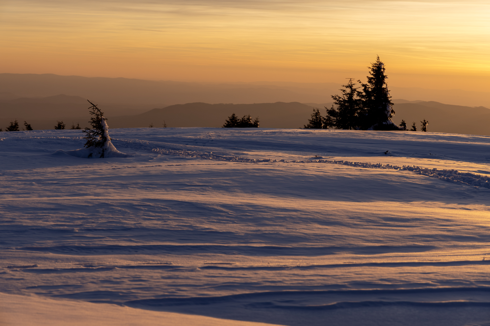

Look
closer.
A personal photography practice shaped by places, people and passing light.
View portfolioSelected photographs
A way of paying attention.
Photography is where I slow down and notice what might otherwise pass unseen.


About
Two ways
of seeing.
I’m Iuliana-Maria Burz. I work in technology and photograph from curiosity—moving between structure and instinct.
Photography is where I slow down, follow the light and keep the moments that might otherwise pass unnoticed.
Read my story